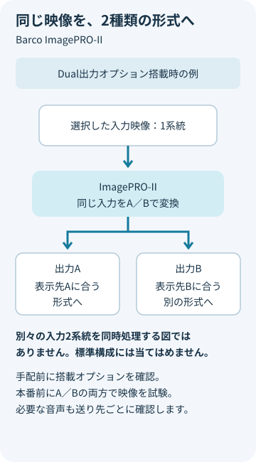

何から何へ送る？
パソコンや再生機と、LED・プロジェクターの入力端子を整理します。
映像をつなぐ・整える ↗EQUIPMENT / 77
映像スケーラー・信号変換
映像機器と会場の画面を、つながる形式へ。
KEY SPECIFICATIONS

画像を大きく見る ＋01 / ROLE & FLOW
役割を表す説明図です。実際の配線・端子構成は案件に合わせて決めます。
02 / BEFORE YOUR BRIEF
パソコンや再生機と、LED・プロジェクターの入力端子を整理します。
異なる2形式へ同時に送る場合は、Dual出力オプションを備えた構成を手配します。標準構成とは区別します。
音声を映像と一緒に送るか、別の経路へ渡すかを決めます。
03 / CHOOSING THE RIGHT TOOL
既存のDVI・アナログ系統を活かしながら、会場側が受けられる形式へ映像を変換する構成に。
HDMI端子があっても4K/30pをすべての端子で扱えるわけではありません。Dual出力は1つの入力を異なる出力形式へ変換する機能で、別々の映像を2系統同時処理する意味ではありません。
標準、Dual出力、音声付きなどの構成があるため、必要な機能を製品名だけで決めず搭載構成で選びます。入力を中継するLOOPと、変換後の映像を送る出力を区別します。 メーカーはImagePRO-IIシリーズをEnd of lifeと案内し、後継にImagePRO-4Kを挙げています。新旧機種の端子・操作・オプションは同一ではありません。
参考資料：Barco ImagePRO-IIシリーズ仕様書（2024年7月9日） ↗（2026年11月5日照合）
入力機器と出力先の型式、解像度・フレームレート、映像端子、音声の送り先、使用期間、設営・操作の範囲。料金は構成別のお見積りです。をお聞かせください。本体・周辺機材・搬入出・設営・本番操作・撤去を分けて、必要な範囲を整理します。セットの付属品や人員が自動で含まれる表示ではありません。
04 / RELATED EQUIPMENT